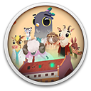

 Fall of Porcupine: Prologue
Details
 |
|
| Playtime | Not Played |
| Last Activity | Never |
| Added | 01/08/2023 18:51:43 |
| Modified | 01/08/2023 18:55:18 |
| Completion Status | Not Played |
| Library | Gog |
| Source | GOG |
| Platform | PC (Windows) |
| Release Date | |
| Community Score | |
| Critic Score | |
| User Score | |
| Genre | Adventure Platform |
| Developer | |
| Publisher | |
| Feature | |
| Links | |
| Tag | [EMT] Logo Missing [EMT] Video Micro missing 2D 2D Platformer Adventure Atmospheric Cartoony Choices Matter Colorful Controller Conversation Cute Drama Emotional Hand-drawn Indie Interactive Fiction Linear Narration Platformer Singleplayer Story Rich Stylized |
Description

New jobs can be tense – especially when you’re about to become a doctor! Join Finley on an original narrative adventure as you take your first steps in a new and exciting world. Together, experience the “Last Days of Summer” before a change of seasons stirs up the sleepy town of Porcupine.
FALL OF PORCUPINE: PROLOGUE is a 100% free intro episode for the upcoming story-adventure FALL OF PORCUPINE.
FALL IS COMING
FALL OF PORCUPINE is a unique story adventure. The collision of work and daily life and an exciting reflection of an unhealthy healthcare system.
FEATURES
“Don’t miss our great features! Read more!”
Explore A Beautiful, Diverse World
Not only is there a lot to discover in the old hospital, but also in the small town of Porcupine itself. Take the time to meet the villagers and have a beer with them in the local pub, or take a trip to the nearby forest, where mysterious castle ruins are hidden.
Get to Know The Exciting Characters
The blunt head doctor, the selfless nurse, Finley's smart friends, and many other residents populate the small town of Porcupine. Engage in funny, profound, and sometimes serious dialogues with them, in which you'll be able to choose your answers and influence your relationship with them.
Demonstrate Your Skills and Empathy
You don't even have time to look at the clock because your patients are waiting! Investigate what's wrong with them through your conversations and treat them in different minigames that challenge you in logic, speed, and skill. And most importantly, withstand the stress when the strict head doctor questions your knowledge yet again.
Uncover Dark Secrets
At first glance, the small town is a warm, friendly place where everyone knows and greets each other. But if you live there for any length of time, you'll suspect that not everyone is as honest as they pretend to be and shadows lurk in the distance. Be on guard!